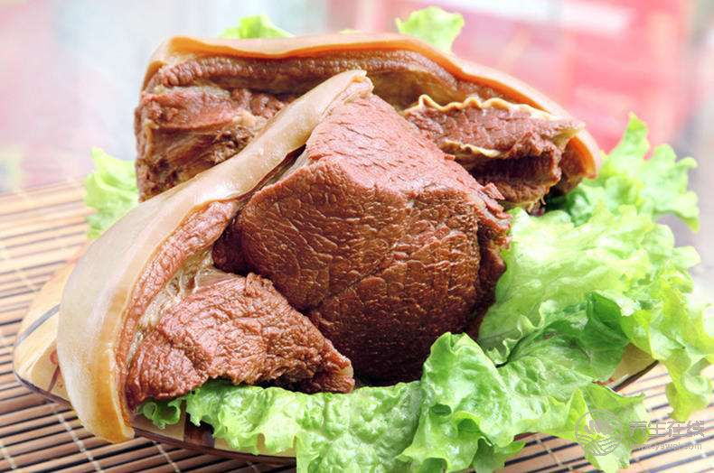

驴肉
驴产于河北，马科动物。 “天上龙肉，地上驴肉”，是人们对驴肉的最高褒扬。鲁西、鲁东南、皖北、皖西、豫西北、晋东南、晋西北、陕北、 河北一带许多地方形成了独具特色的传统食品和地方名吃。驴肉肉质细嫩，呈红褐色，有补气、补虚之功。性平。


功效
驴肉性味甘凉，无毒性，能解除心烦，是人精神安宁;驴肉是属于高蛋白质， 低脂肪的食物，其中含有的动物胶成分，有利于人体机能的调节;驴肉中的脂肪类似于植物油， 其中的不饱和脂肪酸能使人体内的胆固醇溶解 使其不能粘附在血管壁上，有效的防止动脉硬化;驴肉含有的大量营养元素，成年男子食用能清楚腰酸腿软，补肾壮阳。
营养价值
健脾养脾、补阳壮阳、补血养血、补气益气、调理肠胃、增强记忆力、滋阴补阴、安神镇定、清肺润肺、开胃消食、抗衰老。

适宜人群
一般人均可食用驴肉，孕妇、有慢性肠炎、腹泻、脾胃虚寒者忌食驴肉。